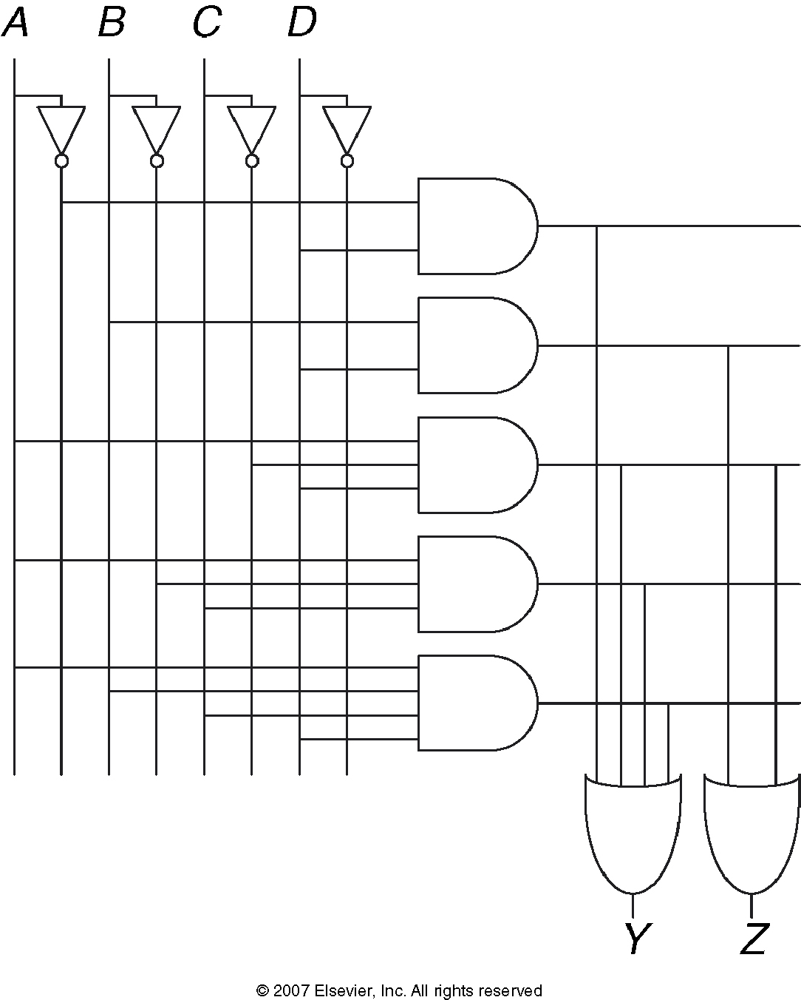
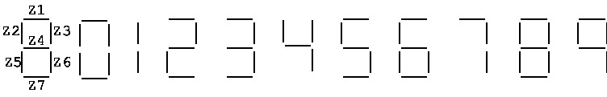
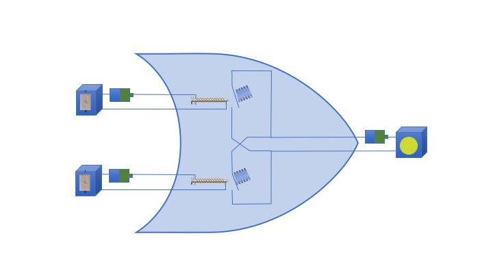
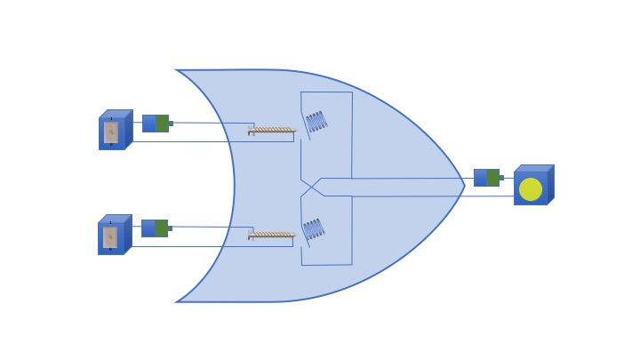
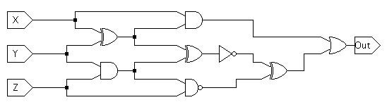

- (Harris & Harris exercise 2.24) Write Boolean equations for the circuit shown below. You need not minimize the
equations.

- Picture a typical 7-line LED display (e.g., one digit of a
typical digital alarm clock --- see the diagram below). You are
going to design a combinatorial circuit that controls whether
the bottom-left LED is
lit (LED z_5 to be precise). LED z_5 is
lit for numbers 0, 2, 6, and 8; and blank for all
other inputs --- including invalid inputs.

- Write the truth table for this circuit. (The circuit is
for LED z_5 only. Do not include columns for
other LEDs.)
- Express the truth table in Sum-of-Products form.
- Draw the logic diagram for this combinatorial circuit in a "PLA-style".
- Draw the logic diagram corresponding to this boolean expression:
(AB xor (B + C̅)) + A̅C. (There is a bar over the first "C" and the last
"A".) You may use XOR gate.
- Draw the logic diagram corresponding to this boolean
expression:
XZ + (XY + Z̅) (There is a bar over the last "Z".)
- Draw a logic diagram to show how to build an exclusive-or gate out
of AND, OR, and NOT gates.
- Show how to build a NAND gate using only NOR gates. Hint:
Use De Morgan's
Theorems.
You can also use google to find more extensive discussions
on the web.
- Show that
{NOR} is logically complete. Your "proof" must
include sentences. Diagrams alone are not sufficient.
- Using the relays shown below as a model, show how you could
combine one or more relays to build a
NAND gate. (Relays are
covered by Video
2.)
 

- (From Null 3rd ed., Chapter 3, number 35.) Construct a truth table to describe the operation of this
circuit:

- Write a Boolean expression describing the circuit shown above. Your expression should describe the
circuit as drawn (i.e., don't simplify it).
- Now write a simplified Boolean expression based on the truth table.
- (From Null, Chapter 3, number 42.) Little Susie is
building a dog-training robots she calls CESAR (Canine Education
Special Assistant Robot). Currently, she is working on the
robot unit that will award treats when training puppies. First
she needs to figure out when a puppy should get dog biscuit as a
reward; then she can build the appropriate circuit for the
robot. She has concluded the following:
- Give the puppy a biscuit if it sits and wiggles but does
not bark.
- Give the puppy a biscuit if it bars an wiggles but does
not sit.
- Give the puppy a biscuit if it sits but does not wiggle
or bark.
- Give the puppy a biscuit if it sits, wiggles and
barks.
- Don't give the puppy a biscuit otherwise.
Assume the following variables and values:
- S: Sit (0 for not sitting; 1 for sitting)
- W: Wiggles (0 for not wiggling; 1 for wiggling)
- B: Barking (0 for not barking; 1 for barking)
- F: Biscuit function (0, don't give the puppy a biscuit
1, give the poppy a biscuit)
Construct a truth table, find a minimized Boolean function
to implement the logic, then draw the logic diagram.
- Design a circuit that returns
true if the input represents the integer
10 and false otherwise.
- Design a circuit that takes two
n-bit inputs and returns true
if the two inputs are identical and
false otherwise.
Updated Monday, 21 December 2020, 3:00 PM